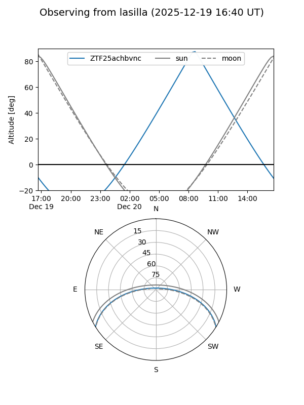
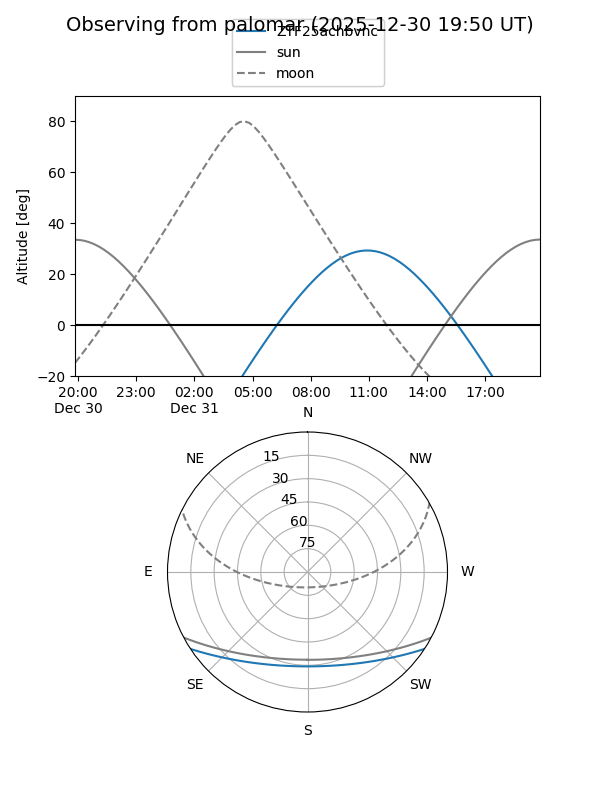

ZTF25achbvnc
Target ZTF25achbvnc at 2025-12-31 16:59
Aliases and brokers:
FINK:
Lasair:
ALeRCE:
alt names
ZTF25achbvnc (ztf,fink_ztf)
Coordinates:
equatorial (ra, dec) = 146.7776,-27.21097
equatorial (HMS+DMS) = 09:47:06.63,-27:12:39.49
galactic (l, b) = (259.9848,+19.90709)
Flags:
Photometry:
last ztfg=19.70, ztfr=19.56
2 ztfg, 1 ztfr detections
Lightcurve

Visibility


Additional plots